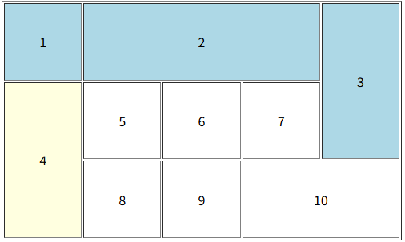

🐰1. 최애 친구들
🐰2. 텍스트 관련 태그
HTML 태그는 크게 블록(block)과 인라인(inline)으로 나뉜다.
이 차이는 화면에 배치되는 방식의 차이이다.

🥕 2.1. 블록 태그
- 특징
- 항상 새 줄에서 시작
- 한 줄 전체(가로)를 독점해서 차지한다. 따라서 옆에 다른 요소가 올 수 없다.
대표 태그
p |
문단(Paragraph) |
h1 ~ h6 |
제목(heading)을 표시 |
div |
구역(divide)을 나누는 컨테이너 |
ul |
순서 없는 리스트를 표시 |
🥕 2.2. 인라인 태그
- 특징
- 블록 태그 안에 들어가서 일부러 표시된다.
- 옆의 다른 인라인 요소랑 나란히 배치할 수 있다.
strong |
굵게 표시(bold) |
a ~ h6 |
하이퍼링크 |
img |
이미지 |
span |
구간 나누기
(짧은 텍스트 스타일 적용할 때 자주 사용) |
👉 가장 많이 쓰는 건 span, 특정 글자에 색/스타일 주고 싶을 때 사용한다.
🐰3. 리스트 관련 태그
🥕 3.1. 리스트 만들기 3가지 태그

- 순서 있는 리스트
ol...ol
항목들에 자동으로 번호 1, 2, 3이 붙는다.
안에 들어가는 항목은li(list item)태그로 표현한다 - 순서 없는 리스트
ul...ul
번호 대신 불릿으로 표시된다li(list item)태그로 항목을 작성한다. - 정의 리스트(definition list)
dl...dl
용어와 그에 대한 설명을 표현할 때 사용한다.
dt: definition term(용어)dd: definition description(설명)
🐰4. 테이블 관련 태그
🥕 4.1. 표 만드는 데 사용되는 태그

- 표 전체를 담는 컨테이너
<ol...ol>
표의 시작과 끝을 감싸는 태그
안에 행<tr>과 열<th>, <td>가 들어간다. - 표 제목
<caption>
표 제목을 지정할 때 사용, 보통 표 맨 위에 나타난다. - 표의 헤딩 그룹
<thread>
표의 머리 부분, 열 제목, th들을 묶어주는 역할
여러 행이 필요할 때도 묶어서 관리 가능하다 - 표의 바닥 그룹
<tfoot>
표의 바닥 부분. 합계, 평군 등 마지막 줄에 들어갈 데이터를 묶을 때 사용 - 표의 본문 그룹
<tbody>
실제 데이터 셀들을 모아서 관리한다<tr>행 단위로 나누어 넣는다. - 행(row)
<tr>
표의 한 줄을 의미, 각 행 안에 열 제목<th>또는 데이터<td>넣는다. - 열 제목 셀
<tht>
머리글 셀, 보통 글자가 굵게 표시되고 가운데 정렬된다.
어떤 열의 의미인지 알려주는 셀 - 데이터 셀
<td>
실제 데이터를 넣는 셀,<td>와 달리 일반 글자 스타일
🥕 4.2. 표의 편집
HTML표(table)에서 셀 병합을 할 때 사용하는 속성- colspan
열을 합치는 속성
ex. 두 개의 열을 합치고 싶을 때colspan = "2"< td colspan="합칠 열의 개수"> ... </td>
< th colspan="합칠 열의 개수"> ... </th> - rowspan
행을 합치는 속성
ex. 두 개의 행을 합치고 싶을 때rowspan = "2"< td rowspan="합칠 행의 개수"> ... </td>
< th rowspan="합칠 행의 개수"> ... </th> - 주의할점
colspan / rowspan을 쓰면 표의 셀 개수가 달라지므로
다른 행이나 열에 맞게<td>개수를 조정해야 한다.
안그러면 표의 모양이 깨질 수 있다.

🐰5. 미디어 관련 태그
🥕 5.1. HTML5미디어 삽입의 표준화
과거에는 웹페이지에 음악이나 영상을 넣으려면 플러그인(Plugin)
→ Adobe Flash Player, ReadPlayer같은 외부 프로그램이 꼭 필요했다.
하지만 HTML5부터는 표준 태그 <audio>와
<video>를 사용하여 브라우저 자체에서 미디어를 재생할 수 있게 되었다.
- 별도의 플러그인 설치❌
- HTML코드만으로 오디오, 비디오 재생 가능
☁️ 비표준 미디어 재생
만약 삽입하려는 파일이 표준 포맷이 아니라면(ex.Flash, .swf, 혹은 특수 코덱 영상 등
HTML5태그만으로는 재생할 수 없다.
이럴 땐 외부 프로그램을 웹페이지 안에 삽입하는 기존 방식의 태그인
embedobject
→ 하지만 보안 문제와 브라우저 호환성 문제 때문에 현대 웹에서는 거의 사용하지 않는다.
🥕 5.2. <video>태그 - 비디오 삽입
<video>: HTML5 영상 재생용 태그<src>: 영상 파일 경로<width>,<height>: 영상 재생 영역 크기<controls>:재생/일시정시/음소거/전체화면 등 제어 버튼 표시<autoplay>:자동 재생<loop>: 반복 재생<muted>: 음소거(단, 대부분의 브라우저는 사용자 상호작용 전 자동재생을 막는다
<source>: 오디오 파일의 후보를 지정<type>: MIME타입(파일 형식)명시 → 브라우저가 어떤 파일인지 인식하도록 도움<audio>태그 안의 텍스트("브라우저가 audio 태그를 지원하지 않습니다.")는
대체 문구(fallback) — 만약 구형 브라우저가 audio를 지원하지 않을 때 표시
☁️ 여러 오디오 파일 지원(대체 소스)
브라우저마다 지원하는 오디오 포맷이 다르다
- 크롬, 엣지 →
.mp3,.ogg,.wav지원 - 사파리 →
.mp3.aac지원
따라서, 여러 포맷을 지정해두면 브라우저가 재생 가능한 파일을 자동 선택한다.